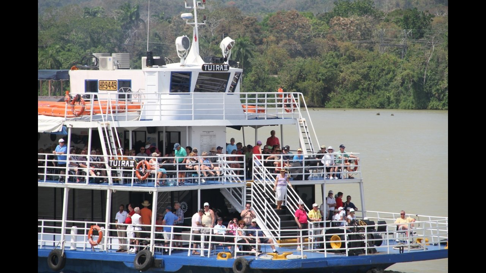
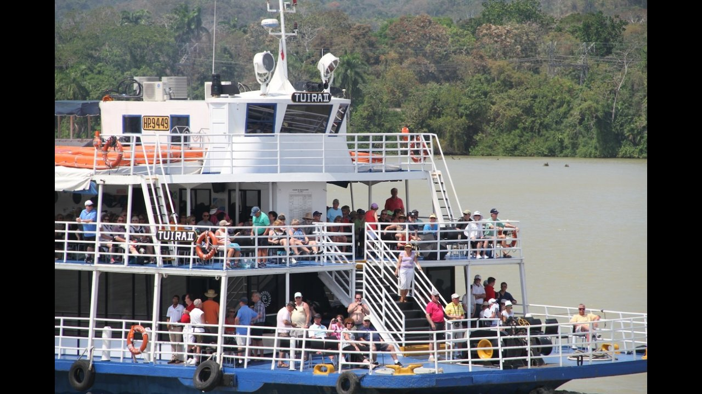

Embrace the beauty and relaxation of the Caribbean on this full-day catamaran tour around the islands of the Bocas del Toro Archipelago in Panama. Dolphin-watching, sun, sand, and snorkeling with reef fish and starfish fill out a laid-back day of exploration with the boat as your base, including lunch onboard.
Day 2 and 3: Snorkling and Chocolate?
This is a unique opportunity to combine authentic, artisanal chocolate making with an underwater exploration of the Caribbean Sea! Our chocolate is produced through sustainable practices and we still utilize several traditional chocolate production techniques! Our guests have the opportunity to taste and try our delicious, handmade chocolate along every step of the chocolate making process. Furthermore, guests will be able to help us harvest fresh cacao pods from our forest to aid us in our production! After your chocolate tour, you’ll have to the opportunity to visit Mangrove Island, a hidden snorkel site with some of the most ideal conditions & water visibility that Bocas del Toro has to offer. This tiny island can only be reached by boat, making it very private and untouched by humans. This experience is made even more special by the opportunity to find several groups of bottlenose dolphins, which are residents to Dolphin Bay!

 
